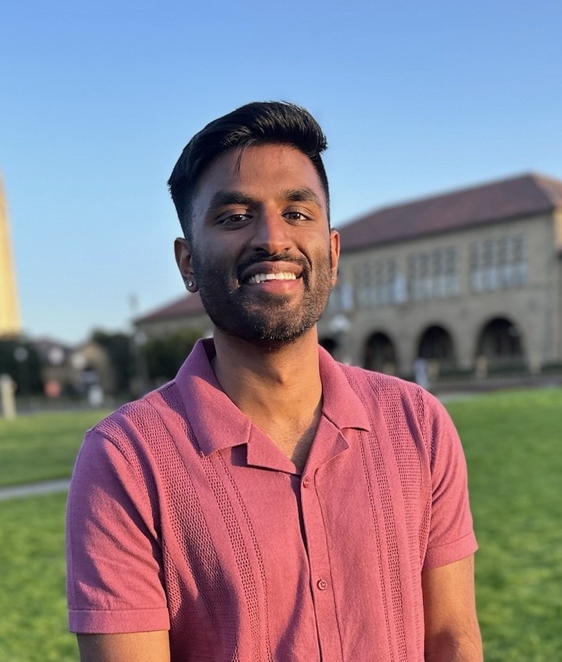

I’m a 4th year PhD Candidate in Political Science at Stanford University. I also hold a Masters in Statistics from Stanford University. My research focuses on the parties in Congress, political communication, and statistical methods. I am on the academic job market in the fall of 2026.
My dissertation develops a new theory of Congress that explains why rare, and even unprecedented, conflict within House majority parties on critical procedural votes (such as special rules and speaker elections) has emerged in recent years. I show that party leaders are losing control over certain members’ fundraising networks, enabling these members to defect with less fear of reprisal.
My work on political communication studies the drivers and effects of elite rhetoric. For example, I test whether user engagement shapes politicians’ rhetoric on social media, and whether changes in how mainstream media covers the news has contributed to Americans’ declining trust in the media.
A third line of research develops statistical approaches to improve measurement and inference in the social sciences.
Email: acr122@stanford.edu